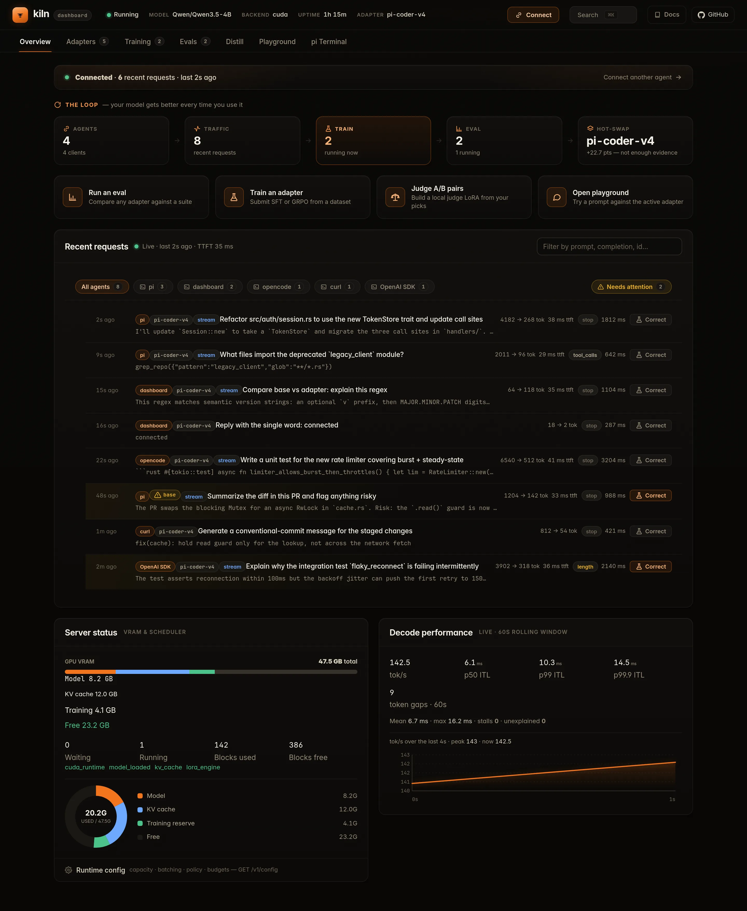

Install Kiln, start the server, point your agent at it.
Four checkpoints to a coding agent backed by your own GPU: install Kiln, start the server, connect pi or opencode, then see the request land in the dashboard. Every path serves the same target model: Qwen/Qwen3.5-4B.
Your first successful run
Four checkpoints. One working endpoint.
Stop after checkpoint four if you only need local inference. SFT, GRPO, evals, and adapter workflows are the optional next loop—not prerequisites.
Check requirements + choose one path
Install Kiln
Before you download
- Set aside about 20 GB of free disk space for the model and downloaded artifacts. Training also needs more accelerator memory than a first inference run.
- Choose the build for your available accelerator runtime: CUDA, ROCm, Vulkan, or Metal.
- The server archives below target x86_64 Linux and Windows or Apple Silicon macOS. Kiln Desktop installs the matching server build; it does not add support for another CPU architecture.
Kiln Desktop · recommended
Download Kiln Desktop v0.2.16, then choose or download the Qwen3.5-4B model in the app and start the server from the GUI.
Desktop and server release lines intentionally differ: the Desktop app ships under desktop-v* tags and downloads and verifies the latest kiln-v* server binary for you. These links were checked against the newest Desktop release on July 30, 2026. When the app reports that the server is ready, skip checkpoint two and continue to Connect your agent.
| Platform | Installer |
|---|---|
| macOS Apple Silicon | Download .dmg |
| Windows | Download .exe · .msi |
| Linux | Download .deb · .AppImage |
Need a terminal-first server binary? 5 server artifacts
Release integrity
Verify provenance before extraction
Every server archive has a SHA-256 sidecar and a Sigstore-backed GitHub build-provenance attestation from the release workflow. The macOS binary is also code-signed and notarized; Linux and Windows archives do not carry platform code signatures.
Install the GitHub CLI. Each command below verifies its downloaded archive before extracting it.
gh attestation verify ARCHIVE \
--repo ericflo/kiln \
--signer-workflow ericflo/kiln/.github/workflows/server-release.ymlLinux x86_64 · CUDA 12.4
KILN_VERSION=$(curl -fsSL https://api.github.com/repos/ericflo/kiln/releases/latest | sed -n 's/.*"tag_name": "kiln-v\([^"]*\)".*/\1/p')
test -n "$KILN_VERSION"
curl -fsSLo kiln-linux-cuda.tar.gz \
"https://github.com/ericflo/kiln/releases/download/kiln-v${KILN_VERSION}/kiln-${KILN_VERSION}-x86_64-unknown-linux-gnu-cuda124.tar.gz"
gh attestation verify kiln-linux-cuda.tar.gz \
--repo ericflo/kiln \
--signer-workflow ericflo/kiln/.github/workflows/server-release.yml
tar -xzf kiln-linux-cuda.tar.gzLinux x86_64 · ROCm 7.2.4
KILN_VERSION=$(curl -fsSL https://api.github.com/repos/ericflo/kiln/releases/latest | sed -n 's/.*"tag_name": "kiln-v\([^"]*\)".*/\1/p')
test -n "$KILN_VERSION"
curl -fsSLo kiln-linux-rocm.tar.gz \
"https://github.com/ericflo/kiln/releases/download/kiln-v${KILN_VERSION}/kiln-${KILN_VERSION}-x86_64-unknown-linux-gnu-rocm724.tar.gz"
gh attestation verify kiln-linux-rocm.tar.gz \
--repo ericflo/kiln \
--signer-workflow ericflo/kiln/.github/workflows/server-release.yml
tar -xzf kiln-linux-rocm.tar.gzUse this on AMD Linux systems with ROCm/HIP. This release artifact is compiled for gfx90a, gfx942, gfx1100, and gfx1151. Those compile targets describe the artifact; runtime admission still follows reported device capabilities rather than a device name or ID.
Linux x86_64 · Vulkan
KILN_VERSION=$(curl -fsSL https://api.github.com/repos/ericflo/kiln/releases/latest | sed -n 's/.*"tag_name": "kiln-v\([^"]*\)".*/\1/p')
test -n "$KILN_VERSION"
curl -fsSLo kiln-linux-vulkan.tar.gz \
"https://github.com/ericflo/kiln/releases/download/kiln-v${KILN_VERSION}/kiln-${KILN_VERSION}-x86_64-unknown-linux-gnu-vulkan.tar.gz"
gh attestation verify kiln-linux-vulkan.tar.gz \
--repo ericflo/kiln \
--signer-workflow ericflo/kiln/.github/workflows/server-release.yml
tar -xzf kiln-linux-vulkan.tar.gzUse this when vulkaninfo --summary lists a Linux GPU with a compute queue and enough memory for the model. Kiln negotiates the highest mutually supported API version up to Vulkan 1.2 and admits each optional route only when the selected device reports every required capability. Device names and IDs are never routing inputs.
macOS Apple Silicon · Metal
KILN_VERSION=$(curl -fsSL https://api.github.com/repos/ericflo/kiln/releases/latest | sed -n 's/.*"tag_name": "kiln-v\([^"]*\)".*/\1/p')
test -n "$KILN_VERSION"
curl -fsSLo kiln-macos.tar.gz \
"https://github.com/ericflo/kiln/releases/download/kiln-v${KILN_VERSION}/kiln-${KILN_VERSION}-aarch64-apple-darwin-metal.tar.gz"
gh attestation verify kiln-macos.tar.gz \
--repo ericflo/kiln \
--signer-workflow ericflo/kiln/.github/workflows/server-release.yml
tar -xzf kiln-macos.tar.gzWindows x86_64 · CUDA 12.4
$KilnVersion = ((Invoke-RestMethod https://api.github.com/repos/ericflo/kiln/releases/latest).tag_name -replace '^kiln-v', '')
if (-not $KilnVersion) { throw "Could not resolve the latest Kiln release" }
curl.exe -fsSLo kiln-windows.zip `
"https://github.com/ericflo/kiln/releases/download/kiln-v$KilnVersion/kiln-$KilnVersion-x86_64-pc-windows-msvc-cuda124.zip"
gh attestation verify .\kiln-windows.zip `
--repo ericflo/kiln `
--signer-workflow ericflo/kiln/.github/workflows/server-release.yml
Expand-Archive .\kiln-windows.zip -DestinationPath .\kilnModel path + start
Start the server
If Kiln Desktop already reports that the server is ready, continue to checkpoint three. The commands below are for the terminal-first server artifacts.
a. Download Qwen3.5-4B
Download Qwen/Qwen3.5-4B into a local directory. Python is used only by this download helper; the Kiln server does not require a Python runtime.
python3 -m pip install -U huggingface_hub
hf download Qwen/Qwen3.5-4B --local-dir ./Qwen3.5-4BPowerShell: run py -m pip install -U huggingface_hub, then use the same hf download command.
b. Run the server
Server binaries bind to 127.0.0.1:8420 by default. The loopback API does not require a key.
KILN_MODEL_PATH=./Qwen3.5-4B ./kiln servePowerShell:
$env:KILN_MODEL_PATH = ".\Qwen3.5-4B"
.\kiln\kiln.exe serveDocker (Linux + NVIDIA Container Toolkit)
docker run --gpus all -p 127.0.0.1:8420:8420 \
-e KILN_SERVER_HOST=0.0.0.0 \
-e KILN_MODEL_PATH=/models/Qwen3.5-4B \
-v "$PWD/Qwen3.5-4B:/models/Qwen3.5-4B:ro" \
ghcr.io/ericflo/kiln-server:latest serveKiln must listen on the container interface for Docker's port mapping to work. The host-side publication remains restricted to loopback because the API has no built-in authentication. For a reproducible deployment, replace latest with the release version or immutable digest you validated.
Use the client you already have
Connect your agent
Point pi or opencode at the server you just started. Keep the same client and change its base URL. Each request appears in /ui; you can later select traces and judgments for an explicit training job.
Base URL
http://localhost:8420/v1
Model id
Qwen3.5-4B
API key
Loopback: not requiredpi
Configure pi in one command: ./kiln pi-setup adds Kiln as pi's kiln-local provider and sets Qwen3.5-4B as the default model. It backs up existing models.json and settings.json, then merges the Kiln entries while preserving your other providers.
./kiln pi-setup
pi -p "Use the bash tool to run: pwd"
# Trusted remote server? /v1 is appended for you:
./kiln pi-setup --kiln-url http://office-kiln:8420On Windows, replace ./kiln in these examples with .\kiln\kiln.exe. Backups are written beside the originals as models.json.bak-<timestamp> and settings.json.bak-<timestamp>. Kiln's server API is unauthenticated; expose it beyond loopback only through a trusted network or authenticated reverse proxy.
opencode
Add a Kiln provider to ~/.config/opencode/opencode.json, then run opencode and choose Kiln · Qwen3.5-4B with /models. The configuration uses the OpenAI-compatible AI SDK adapter; its placeholder key is ignored by the loopback server.
{
"$schema": "https://opencode.ai/config.json",
"provider": {
"kiln": {
"npm": "@ai-sdk/openai-compatible",
"name": "Kiln (local)",
"options": {
"baseURL": "http://localhost:8420/v1",
"apiKey": "unused"
},
"models": {
"Qwen3.5-4B": { "name": "Kiln · Qwen3.5-4B" }
}
}
}
}You should now see this request in /ui
Open http://127.0.0.1:8420/ui and watch Recent requests. The first successful call from pi or opencode appears with its client label, confirming that the agent is using Kiln.
Qwen3.5 can emit native XML tool calls, but Kiln returns OpenAI-shaped tool_calls to your agent in both streaming and non-streaming responses, so pi and opencode execute tools instead of printing raw XML.
Verify
Open the UI, check health, send chat
Open the dashboard
Visit http://127.0.0.1:8420/ui to inspect status, adapters, training jobs, and quick inference from the dashboard.
Check /health
./kiln healthcurl -fsS http://127.0.0.1:8420/health \
| python3 -m json.toolSend chat
curl -fsS http://127.0.0.1:8420/v1/chat/completions \
-H "Content-Type: application/json" \
-d '{
"model": "Qwen3.5-4B",
"messages": [{"role": "user", "content": "What is 2+2?"}],
"max_tokens": 128,
"thinking_budget_tokens": 32,
"temperature": 0.7
}' | python3 -m json.toolGet one response before moving on to training. The 32-token thinking budget bounds the reasoning phase; see the API guide for examples and the Thinking Budget Contract for normative behavior.

If /ui, /health, or the chat request fails, use Troubleshooting to check the model path, binary download, CUDA/ROCm/Vulkan/Metal setup, Docker, and health checks before retrying.
Prefer terminal-first checks? See the CLI reference for ./kiln health, training, and adapter commands.
Choose the next workflow
Train and evaluate deliberately
Your first-run path is complete. A request appearing in the dashboard does not change the model: you explicitly choose the data, training method, adapter name, and evaluation boundary for every improvement job.
Train with the server that is already running
The server command above uses the default stable profile, which
supports SFT, GRPO, OPD, evaluation, and coordinated live adapter transitions.
No restart or profile setting is required:
KILN_MODEL_PATH=./Qwen3.5-4B ./kiln serve
Use maintenance only to drain inference before exclusive work.
experimental is for qualifying quarantined backend routes, not for
ordinary speed or training. See Serving profiles
for the exact ownership and transition rules.
Correct with SFT
Train a named LoRA adapter from reviewed chat corrections.
Optimize with GRPO
Generate candidates, score them, and train from grouped rewards.
Distill with OPD
Train against an identity-bound local or vLLM teacher.
Prove with evals
Compare the adapter with its baseline on held-out data.
Training contracts, file shapes, and exact-resume rules
SFT, GRPO, and OPD inputs
Each command accepts a distinct, validated input:
./kiln train sftreads SFT JSONL with one chat correction and onemessagesarray per line. Rows fail closed by default../kiln train grporeads a GRPO JSON request or batch, or JSONL with one candidate-and-reward group per line../kiln train opdreads one OPD request object, or a JSON prompt array with--teacher, and requires a registered exact teacher identity.
Use --invalid-row-policy skip only when your review includes the rejected-row hashes in the final receipt. See the GRPO Guide for the generate → score → train loop and the CLI Reference for complete commands.
All training routes use the same chat-message schema. Assistant turns may carry OpenAI-shaped tool_calls, and role: "tool" responses may carry name and tool_call_id. Inline requests, local JSONL, named datasets, rollout provenance, evals, and chat-template rendering preserve those fields.
SFT does not append the inference generation prompt. It supervises assistant reasoning, answers, tool-call bodies, message terminators, and trailing newlines. It ignores assistant role headers and all system, user, and tool-response tokens. See SFT Tokenization and Assistant-Only Loss for the Hugging Face and TRL token-and-label goldens.
Native SFT uses the fixed native_online_lora_v1 online-LoRA profile: one conversation per update, a constant learning rate, accumulation 1, and no warmup, decay, or gradient clipping. Unknown general-trainer options fail closed. The Native SFT Profile defines the update and precision contract; use HF/TRL when you need a general trainer.
For interruptible SFT, GRPO, or OPD, add --checkpoint-interval N; OPD defaults to 25. Job status reports the newest immutable .kiln-checkpoint basename. Resume with the same source, route, adapter, and options plus --resume-checkpoint BASENAME. OPD also requires the exact registered teacher revision. A valid resume restores optimizer and loop state, not only adapter weights.
Every accepted submission prints and persists its effective seed before entering the queue. Record that decimal string with the job ID. A resume uses the checkpoint's original seed and rejects a mismatch. Seed reuse is comparable only when weights, data, tokenizer and template, build, backend, runtime, precision, kernels, and effective environment also match.
Checkpoints, training receipts, adapter manifests, and eval jobs retain the loader's complete base-weight shard manifest. Exact resume rejects changed shard bytes, sizes, or multiplicity before GPU work. Moving or renaming identical shards is allowed; legacy aggregate-only checkpoints are not exactly resumable. See the base-weight provenance contract.
Prove the adapter is better — evals are a peer of training
Upload SFT or GRPO JSONL with POST /v1/eval/datasets/upload. Kiln persists group-aware train, validation, and holdout views: named training defaults to train, while suite synthesis defaults to holdout. Use POST /v1/eval/run to grade an adapter and POST /v1/eval/compare for a head-to-head comparison. A held-out post-eval with a baseline rejects detected training overlap before grading. See the Evals Guide and dataset split contract.
Open the guide for your next task
SFT API and CLI
Post reviewed corrections to /v1/train/sft or run ./kiln train sft, then use ./kiln train status to confirm that the job finished before the next chat request.
GRPO guide
Run the generate → score → train loop against the same server.
OPD distillation
Train against an identity-bound local or vLLM teacher, then resume from exact candidate-boundary checkpoints.
Evals guide
Score adapters with built-in or LLM-judge scorers, synthesize suites from datasets, and run the local A/B judgment flywheel.
API reference
See inference, adapter, training, eval, judgment, metrics, and configuration endpoints.
CLI reference
Keep going from the terminal with health, training, and adapter commands.
Troubleshooting
Fix model paths, binary downloads, CUDA/ROCm/Vulkan/Metal setup, Docker, and health checks.
Demo
Inspect the dashboard fixture captured from source revision f3ae29e4a on July 30, 2026, with each simulated value labelled.
Architecture
Understand the scheduler, block manager, GDN model path, and hot-swap design.